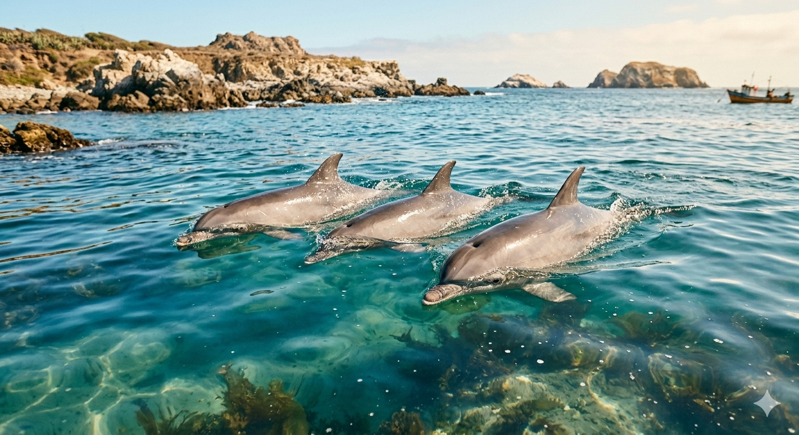
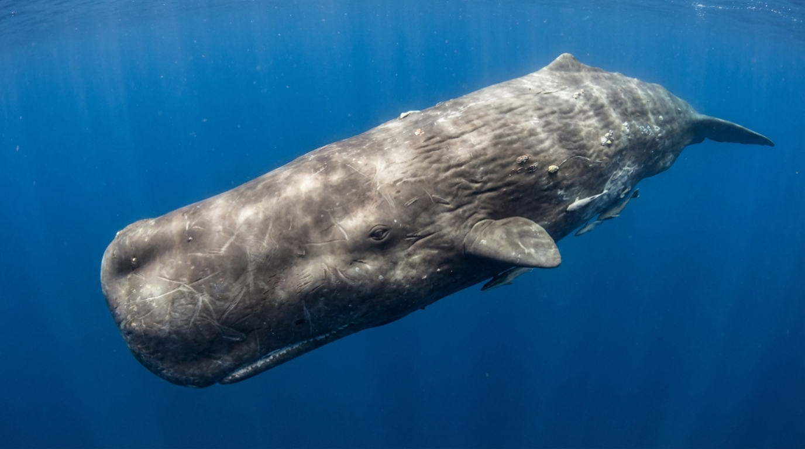
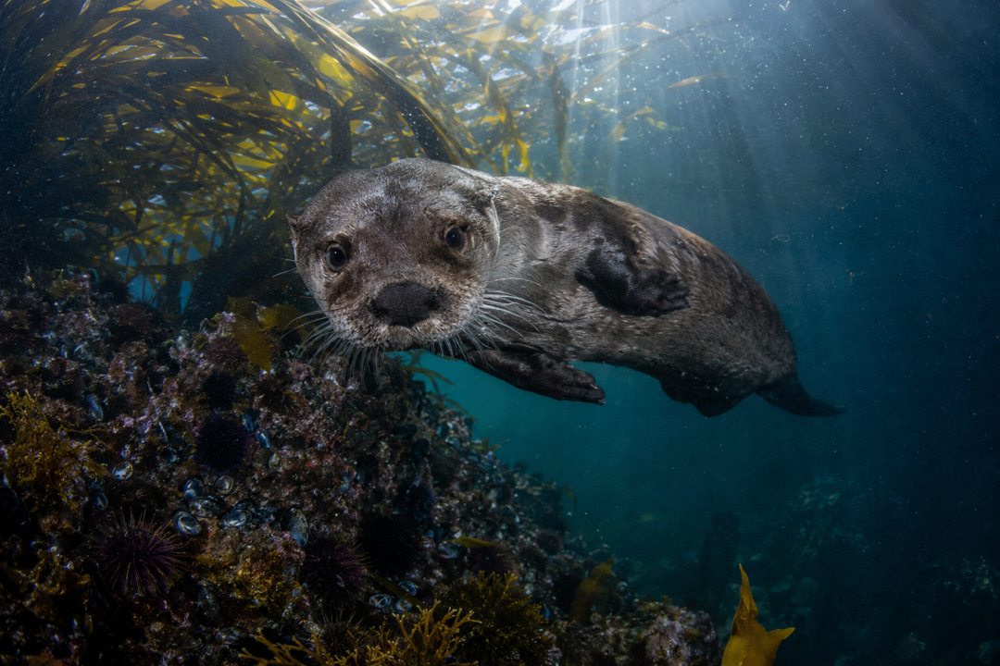

Flora y Fauna


Biodiversidad del Archipiélago
Delfines, pingüinos, chungungos y ballenas conviven en estas aguas excepcionales. Cada especie es parte de un ecosistema frágil y extraordinario que este museo busca proteger.


